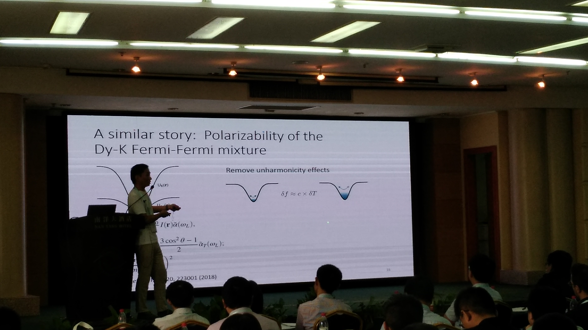

最喜欢的 poster 环节
第一次参加青年冷原子. 今天刚刚结束了 poster 环节.
这是第一次做 poster. 严格来说这次也不算. 因为我还什么也没有做出来, 全 篇都是 Introduction. 不过, poster 展示的环节很有感染力. poster 环节可 以跟任何感兴趣的人交流, 也有在心里期待有人对自己的 poster 感兴趣. poster 环节是我这次参会最喜欢的环节, 也是收获最多的环节. 无论科技怎么 发展, 一对一, 面对面的交流都是最有效, 最深入的交流. 交流的深浅, 会因为 两个人的水平, 背景而不断调节, 这就比听报告一对多的方式更高效. 面对面的 交流, 有面部表情, 有肢体语言, 有眼神的交流, 比线上交流不知道要深入多少 倍. 我喜欢这样一对一, 面对面的交流.
poster 环节让我有很强的参与感. 和别人交流, 无论最终对对方的工作了解了 多少, 都会激起自己对物理的热情. 与之相反, 我很喜欢的自己看书的方式, 即 使最终会有很多收获, 但有时过程确实有些乏味, 让人昏昏欲睡. 也让我想起了 教我们格林函数的刘老师说过的一句话, "要多和人交流, 哪怕那个人是在胡说 八道, 但是就有可能点醒你". 与别人的交流, 往往能够产生意想不到的收获. 简简单单的相互作用, 也会产生丰富的物理现象.
比较遗憾的是自己还没有做出自己的工作, poster 的内容也比较无聊, 就那么 几个卡通示意图. 不过我还是很意外, 有三四个人对我的 poster 内容感兴趣, 让我给它们讲解. 希望下次做 poster 能做出自己的东西!
+把我第一次做的 poster 放在这里, 纪念一下(被google推给了某个师兄, 还是 撤下来吧, 不能给老板丢人...).+ (右上角的冰糖葫芦是自己用 inkscape 画得, 它和左边的人大校徽上的三个人相呼应. 感谢 B站up主 疯王子 录制的 inkscape 教学视频: https://space.bilibili.com/5884683/channel/detail?cid=39695)
大唐不夜城
三次到大唐不夜城. 喜欢这大唐的大气, 色彩明亮, 不喜欢大清的风格. 不管如 何地商业化, 它还是让我心情好了一些, 忘记一些烦恼, 还拍了几张好看的照片.


生活中总有东西对你微笑
从某个报告的 PPT 上发现了一张笑脸.
